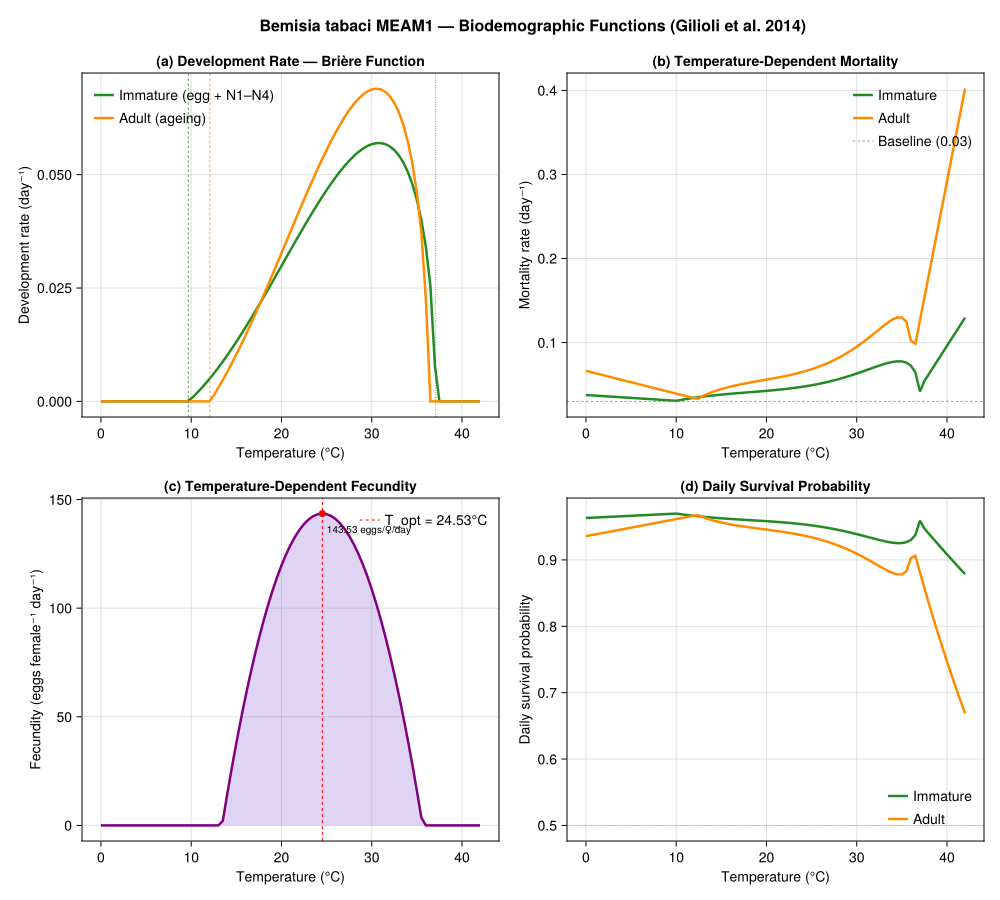
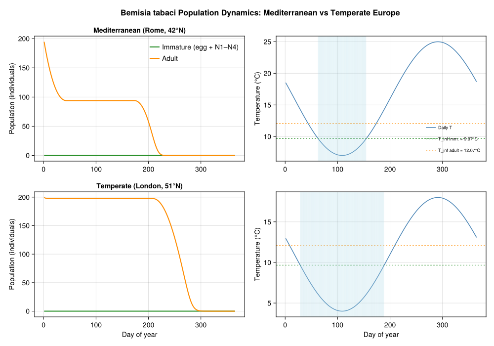
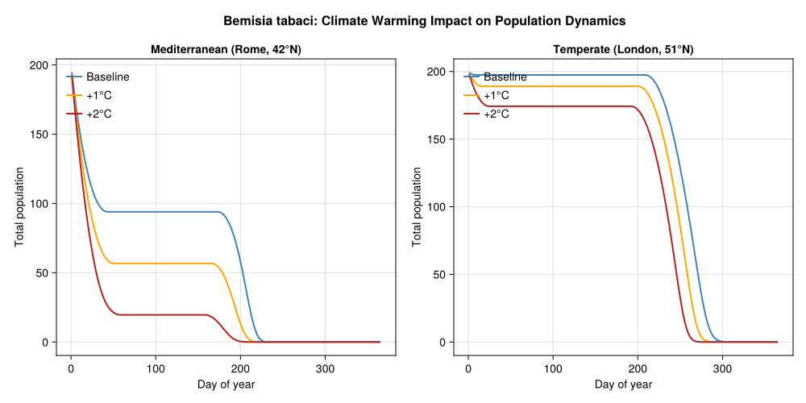
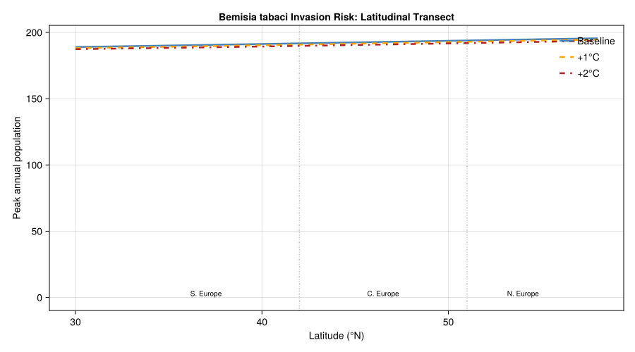

Bemisia tabaci Invasion Risk in Europe
PhysiologicallyBasedDemographicModels.jl
- Introduction
- Model Description
- Implementation
- Temperature Response Curves
- Stage-Structured PBDM
- Population Dynamics: Mediterranean vs Temperate Europe
- Climate Warming Analysis
- Key Insights
- Parameter Sources
- References
Primary reference: (Gilioli et al. 2014).
Introduction
The silverleaf whitefly (Bemisia tabaci, Hemiptera: Aleyrodidae) is one of the most damaging invasive agricultural pests worldwide. Originally from tropical and subtropical regions, the species complex comprises over 40 cryptic species, of which the Middle East–Asia Minor 1 (MEAM1, formerly biotype B) is the most invasive and economically important. MEAM1 feeds on over 600 plant species, transmits more than 100 plant viruses (including tomato yellow leaf curl virus), and causes direct feeding damage through phloem sap extraction and honeydew contamination.
Quarantine status in Europe
Bemisia tabaci is listed as a quarantine pest in the European Union (EFSA, 2013). While the whitefly is established in Mediterranean greenhouse production and in some outdoor habitats in southern Europe, its potential for northward range expansion under climate change is a significant concern. The species cannot survive prolonged freezing, making winter severity the primary limiting factor for outdoor establishment in northern Europe.
Invasion timeline
| Year | Event |
|---|---|
| 1889 | First described from tobacco in Greece |
| 1980s | MEAM1 biotype recognized as highly invasive |
| 1987–1990 | MEAM1 invades Americas and Europe |
| 1990s | Established in Mediterranean greenhouses |
| 2000s | Outdoor populations in S. Spain, S. Italy, Greece |
| 2014 | Gilioli et al. model European distribution under climate change |
The Gilioli et al. (2014) PBDM approach
Gilioli et al. (2014) developed a physiologically based demographic model (PBDM) to assess the potential distribution of B. tabaci MEAM1 in Europe under current and future climate scenarios. The model uses:
- A von Foerster partial differential equation framework for age-structured population dynamics in physiological time
- Brière-type nonlinear development rate functions fitted to laboratory data
- Polynomial survival functions capturing U-shaped temperature-dependent mortality
- Dome-shaped fecundity as a function of temperature
- Climate projections: baseline (1950–2000) plus uniform +1°C and +2°C warming scenarios
References:
- Gilioli, G., Pasquali, S. and Marchesini, E. (2014). Modelling the potential distribution of Bemisia tabaci in Europe in light of the climate change scenario. Pest Management Science 70:1611–1623.
- EFSA Panel on Plant Health (2013). Scientific Opinion on the risks to plant health posed by Bemisia tabaci species complex. EFSA Journal 11(4):3162.
Model Description
The PBDM follows the distributed maturation time framework of Manetsch (1976) and Vansickle (1977), discretized from the continuous von Foerster PDE. The population is structured into life stages, each governed by:
\[\frac{\partial \phi_i(t,x)}{\partial t} + \sigma_i(T) \frac{\partial \phi_i(t,x)}{\partial x} + \mu_i(T) \phi_i(t,x) = 0\]
where $\phi_i(t,x)$ is the age density in stage $i$, $\sigma_i(T)$ is the temperature-dependent development rate, $\mu_i(T)$ is the mortality rate, and $x \in [0,1]$ is the physiological age within the stage.
Development rate
Development is modeled with a Brière et al. (1999) nonlinear function:
\[\sigma(T) = a \cdot T \cdot (T - T_\text{inf}) \cdot \sqrt{T_\text{sup} - T}\]
for $T \in [T_\text{inf}, T_\text{sup}]$, and $\sigma(T) = 0$ otherwise.
Mortality
Within the viable temperature range, daily survival probability is a quadratic:
\[\text{sur}(T) = p_1 T^2 + p_2 T + p_3\]
The temperature-dependent mortality rate combines the survival function with the development rate:
\[\mu(T) = \begin{cases} -\sigma(T) \cdot \log[\text{sur}(T)] & T \in [T_\text{inf}, T_\text{sup}] \\ -\sigma(T_\text{inf}) \cdot \log[\text{sur}(T_\text{inf})] \cdot (T_\text{inf} - T + 1) & T < T_\text{inf} \\ -\sigma(T_\text{sup}) \cdot \log[\text{sur}(T_\text{sup})] \cdot (T - T_\text{sup} + 1) & T > T_\text{sup} \end{cases}\]
A constant baseline mortality of 0.03 day⁻¹ is added.
Fecundity
Temperature-dependent fecundity follows a truncated dome:
\[\text{fec}(T) = \alpha \cdot \max\!\left[1 - \left(\frac{T - T_\text{min} - T_\text{mid}}{T_\text{mid}}\right)^2,\; 0\right]\]
with peak fecundity $\alpha = 143.53$ eggs female⁻¹ day⁻¹ at $T_\text{opt} = T_\text{min} + T_\text{mid} = 24.53$°C.
Implementation
We implement the B. tabaci PBDM using the distributed delay framework from PhysiologicallyBasedDemographicModels.jl. Following Gilioli et al. (2014), the model has two aggregate stages — immature (egg through N4) and adult — each with its own Brière development rate and polynomial survival function.
Development rate functions
using PhysiologicallyBasedDemographicModels
# --- Brière development rate parameters (Gilioli et al. 2014, Table A1) ---
# σ(T) = a * T * (T - T_inf) * sqrt(T_sup - T)
# Immature stage (egg + nymphs N1-N4 combined)
immature_dev = BriereDevelopmentRate(3.502e-5, 9.67, 37.05)
# Adult stage (ageing / lifespan)
adult_dev = BriereDevelopmentRate(5.112e-5, 12.07, 36.26)
# Verify development rates at key temperatures
println("Bemisia tabaci development rates (Gilioli et al. 2014, Table A1):")
println("="^65)
println(" T (°C) | Immature r(T) | Adult r(T) | Imm. time (d)")
println("-"^65)
for T in [10.0, 15.0, 20.0, 25.0, 27.0, 30.0, 33.0, 35.0, 37.0]
ri = development_rate(immature_dev, T)
ra = development_rate(adult_dev, T)
d_imm = ri > 0 ? round(1.0 / ri, digits=1) : Inf
println(" $(lpad(T, 5)) | $(lpad(round(ri, digits=6), 9)) |" *
" $(lpad(round(ra, digits=6), 9)) | $(d_imm)")
endBemisia tabaci development rates (Gilioli et al. 2014, Table A1):
=================================================================
T (°C) | Immature r(T) | Adult r(T) | Imm. time (d)
-----------------------------------------------------------------
10.0 | 0.000601 | 0.0 | 1663.7
15.0 | 0.013147 | 0.010359 | 76.1
20.0 | 0.029875 | 0.032693 | 33.5
25.0 | 0.04659 | 0.05545 | 21.5
27.0 | 0.051947 | 0.062708 | 19.3
30.0 | 0.056711 | 0.068799 | 17.6
33.0 | 0.054259 | 0.06375 | 18.4
35.0 | 0.044453 | 0.046052 | 22.5
37.0 | 0.007918 | 0.0 | 126.3Mortality functions
# --- Temperature-dependent mortality (Gilioli et al. 2014, Table A2) ---
# Survival: sur(T) = p₁T² + p₂T + p₃
# Mortality: μ(T) = -σ(T) * log(sur(T)) within [T_inf, T_sup]
# Immature survival parameters
const IMM_P1 = -0.002194
const IMM_P2 = 0.0997
const IMM_P3 = -0.4587
const IMM_T_INF_MORT = 10.0
const IMM_T_SUP_MORT = 37.049
# Adult survival parameters
const ADT_P1 = -0.003227
const ADT_P2 = 0.1549
const ADT_P3 = -1.3541
const ADT_T_INF_MORT = 12.4
const ADT_T_SUP_MORT = 36.259
# Baseline mortality
const MU_BASE = 0.03
function survival_prob(T, p1, p2, p3)
s = p1 * T^2 + p2 * T + p3
return clamp(s, 0.001, 0.999)
end
function bemisia_mortality(T, dev_rate_model, p1, p2, p3, T_inf, T_sup)
σ_inf = development_rate(dev_rate_model, max(T_inf, dev_rate_model.T_lower + 0.1))
σ_sup = development_rate(dev_rate_model, min(T_sup, dev_rate_model.T_upper - 0.1))
if T < T_inf
sur_inf = survival_prob(T_inf, p1, p2, p3)
μ_boundary = σ_inf > 0 ? -σ_inf * log(sur_inf) : 0.0
return MU_BASE + μ_boundary * (T_inf - T + 1)
elseif T > T_sup
sur_sup = survival_prob(T_sup, p1, p2, p3)
μ_boundary = σ_sup > 0 ? -σ_sup * log(sur_sup) : 0.0
return MU_BASE + μ_boundary * (T - T_sup + 1)
else
σ_T = development_rate(dev_rate_model, T)
sur = survival_prob(T, p1, p2, p3)
return MU_BASE + (σ_T > 0 ? -σ_T * log(sur) : 0.0)
end
end
function bemisia_immature_mortality(T)
bemisia_mortality(T, immature_dev, IMM_P1, IMM_P2, IMM_P3,
IMM_T_INF_MORT, IMM_T_SUP_MORT)
end
function bemisia_adult_mortality(T)
bemisia_mortality(T, adult_dev, ADT_P1, ADT_P2, ADT_P3,
ADT_T_INF_MORT, ADT_T_SUP_MORT)
end
println("Temperature-dependent mortality rate (day⁻¹):")
println("T (°C) | Immature μ(T) | Adult μ(T) | Imm. daily surv.")
println("-"^60)
for T in [0.0, 5.0, 10.0, 15.0, 20.0, 25.0, 27.0, 30.0, 33.0, 35.0, 38.0]
μi = bemisia_immature_mortality(T)
μa = bemisia_adult_mortality(T)
surv = exp(-μi)
println(" $(lpad(T, 5)) | $(lpad(round(μi, digits=4), 7)) |" *
" $(lpad(round(μa, digits=4), 7)) | $(round(surv, digits=4))")
endTemperature-dependent mortality rate (day⁻¹):
T (°C) | Immature μ(T) | Adult μ(T) | Imm. daily surv.
------------------------------------------------------------
0.0 | 0.0376 | 0.0663 | 0.9631
5.0 | 0.0341 | 0.0528 | 0.9665
10.0 | 0.0307 | 0.0392 | 0.9698
15.0 | 0.038 | 0.0446 | 0.9627
20.0 | 0.0425 | 0.0559 | 0.9584
25.0 | 0.0492 | 0.0683 | 0.952
27.0 | 0.0537 | 0.0766 | 0.9477
30.0 | 0.0631 | 0.095 | 0.9388
33.0 | 0.0743 | 0.1201 | 0.9284
35.0 | 0.0775 | 0.1299 | 0.9254
38.0 | 0.0626 | 0.1813 | 0.9393Fecundity function
# --- Fecundity (Gilioli et al. 2014, Table A3) ---
# fec(T) = α * max(1 - ((T - T_min - T_mid) / T_mid)², 0)
const FEC_ALPHA = 143.53 # peak fecundity (eggs female⁻¹ day⁻¹)
const FEC_T_MIN = 13.42 # lower temperature limit (°C)
const FEC_T_MID = 11.11 # half-width of dome (°C)
const FEC_T_OPT = FEC_T_MIN + FEC_T_MID # 24.53°C
function bemisia_fecundity(T)
z = (T - FEC_T_OPT) / FEC_T_MID
return FEC_ALPHA * max(1.0 - z^2, 0.0)
end
println("Temperature-dependent fecundity (eggs female⁻¹ day⁻¹):")
println("T (°C) | fec(T) | Interpretation")
println("-"^55)
for T in [10.0, 13.5, 15.0, 18.0, 20.0, 22.0, 24.5, 27.0, 30.0, 33.0, 36.0]
f = bemisia_fecundity(T)
interp = f > 120 ? "Near optimal" :
f > 60 ? "High" :
f > 20 ? "Moderate" :
f > 0 ? "Low" : "None"
println(" $(lpad(T, 5)) | $(lpad(round(f, digits=1), 6)) | $interp")
end
println("\nFecundity range: $(FEC_T_MIN)°C to $(round(FEC_T_MIN + 2*FEC_T_MID, digits=2))°C")
println("Peak: $(FEC_ALPHA) eggs/female/day at $(FEC_T_OPT)°C")Temperature-dependent fecundity (eggs female⁻¹ day⁻¹):
T (°C) | fec(T) | Interpretation
-------------------------------------------------------
10.0 | 0.0 | None
13.5 | 2.1 | Low
15.0 | 37.9 | Moderate
18.0 | 93.9 | High
20.0 | 119.7 | High
22.0 | 136.1 | Near optimal
24.5 | 143.5 | Near optimal
27.0 | 136.4 | Near optimal
30.0 | 108.7 | High
33.0 | 60.1 | High
36.0 | 0.0 | None
Fecundity range: 13.42°C to 35.64°C
Peak: 143.53 eggs/female/day at 24.53°CTemperature Response Curves
using CairoMakie
fig = Figure(size=(1000, 900))
T_range = collect(0.0:0.5:42.0)
# --- Panel A: Development rate ---
ax1 = Axis(fig[1, 1],
xlabel="Temperature (°C)",
ylabel="Development rate (day⁻¹)",
title="(a) Development Rate — Brière Function")
ri = [development_rate(immature_dev, T) for T in T_range]
ra = [development_rate(adult_dev, T) for T in T_range]
lines!(ax1, T_range, ri, color=:forestgreen, linewidth=2.5,
label="Immature (egg + N1–N4)")
lines!(ax1, T_range, ra, color=:darkorange, linewidth=2.5,
label="Adult (ageing)")
vlines!(ax1, [9.67], color=:forestgreen, linestyle=:dash, linewidth=0.8)
vlines!(ax1, [12.07], color=:darkorange, linestyle=:dash, linewidth=0.8)
vlines!(ax1, [37.05], color=:forestgreen, linestyle=:dot, linewidth=0.8)
axislegend(ax1, position=:lt, framevisible=false)
# --- Panel B: Mortality rate ---
ax2 = Axis(fig[1, 2],
xlabel="Temperature (°C)",
ylabel="Mortality rate (day⁻¹)",
title="(b) Temperature-Dependent Mortality")
μi = [bemisia_immature_mortality(T) for T in T_range]
μa = [bemisia_adult_mortality(T) for T in T_range]
lines!(ax2, T_range, μi, color=:forestgreen, linewidth=2.5,
label="Immature")
lines!(ax2, T_range, μa, color=:darkorange, linewidth=2.5,
label="Adult")
hlines!(ax2, [MU_BASE], color=:gray, linestyle=:dash, linewidth=0.8,
label="Baseline (0.03)")
axislegend(ax2, position=:rt, framevisible=false)
# --- Panel C: Fecundity ---
ax3 = Axis(fig[2, 1],
xlabel="Temperature (°C)",
ylabel="Fecundity (eggs female⁻¹ day⁻¹)",
title="(c) Temperature-Dependent Fecundity")
fec = [bemisia_fecundity(T) for T in T_range]
band!(ax3, T_range, zeros(length(T_range)), fec,
color=(:mediumpurple, 0.3))
lines!(ax3, T_range, fec, color=:purple, linewidth=2.5)
vlines!(ax3, [FEC_T_OPT], color=:red, linestyle=:dash, linewidth=1,
label="T_opt = $(FEC_T_OPT)°C")
scatter!(ax3, [FEC_T_OPT], [FEC_ALPHA], color=:red, markersize=10)
text!(ax3, FEC_T_OPT + 0.5, FEC_ALPHA - 10,
text="$(FEC_ALPHA) eggs/♀/day", fontsize=10)
axislegend(ax3, position=:rt, framevisible=false)
# --- Panel D: Daily survival ---
ax4 = Axis(fig[2, 2],
xlabel="Temperature (°C)",
ylabel="Daily survival probability",
title="(d) Daily Survival Probability")
surv_i = [exp(-bemisia_immature_mortality(T)) for T in T_range]
surv_a = [exp(-bemisia_adult_mortality(T)) for T in T_range]
lines!(ax4, T_range, surv_i, color=:forestgreen, linewidth=2.5,
label="Immature")
lines!(ax4, T_range, surv_a, color=:darkorange, linewidth=2.5,
label="Adult")
hlines!(ax4, [0.5], color=:gray, linestyle=:dot, linewidth=0.8)
axislegend(ax4, position=:rb, framevisible=false)
Label(fig[0, :], "Bemisia tabaci MEAM1 — Biodemographic Functions (Gilioli et al. 2014)",
fontsize=16, font=:bold)
fig
Stage-Structured PBDM
We build the distributed delay model using the package’s LifeStage, DistributedDelay, and Population types. Following Gilioli et al. (2014), the model has two aggregate stages: immature (egg through N4) and adult. The Brière development parameters define the temperature-dependent flow through each stage.
For the distributed delay, the stage completes when cumulative development rate $\sum \sigma(T_d) = 1.0$ (one full unit of physiological age). The Erlang $k$ parameter controls the variance of developmental times — higher $k$ gives a tighter distribution (CV $\approx 1/\sqrt{k}$).
# Stage completion requires cumulative σ(T) = τ = 1.0
const TAU_IMMATURE = 1.0 # one full stage traversal
const TAU_ADULT = 1.0 # one full adult lifespan
# Erlang substages: k ≈ 25–45 for CV ≈ 0.15–0.20
const K_IMMATURE = 30
const K_ADULT = 20
# Background mortality rate per degree-day unit
const MU_IMM_DD = 0.03
const MU_ADT_DD = 0.04
bemisia_stages = [
LifeStage(:immature, DistributedDelay(K_IMMATURE, TAU_IMMATURE; W0=0.0),
immature_dev, MU_IMM_DD),
LifeStage(:adult, DistributedDelay(K_ADULT, TAU_ADULT; W0=10.0),
adult_dev, MU_ADT_DD),
]
bemisia_pop = Population(:bemisia_tabaci, bemisia_stages)
println("Bemisia tabaci PBDM:")
println(" Stages: ", n_stages(bemisia_pop))
println(" Total substages: ", n_substages(bemisia_pop))
println(" Initial population: ", total_population(bemisia_pop))
for stage in bemisia_pop.stages
d = stage.delay
println(" $(stage.name): k=$(d.k), τ=$(d.τ), " *
"σ²=$(round(delay_variance(d), digits=4)), μ=$(stage.μ)/DD")
endBemisia tabaci PBDM:
Stages: 2
Total substages: 50
Initial population: 200.0
immature: k=30, τ=1.0, σ²=0.0333, μ=0.03/DD
adult: k=20, τ=1.0, σ²=0.05, μ=0.04/DDPopulation Dynamics: Mediterranean vs Temperate Europe
We simulate the whitefly’s population dynamics under representative climate profiles from two contrasting European regions:
- Mediterranean (Rome-like, ~42°N): warm summers, mild winters; mean ~16°C, amplitude ~9°C. Outdoor establishment possible.
- Temperate (London-like, ~51°N): cool summers, cold winters; mean ~11°C, amplitude ~7°C. Winter limits persistence.
# Define representative climates
climates = [
("Mediterranean (Rome, 42°N)", 16.0, 9.0),
("Temperate (London, 51°N)", 11.0, 7.0),
]
results = Dict{String, Any}()
for (name, T_mean, amplitude) in climates
sw = SinusoidalWeather(T_mean, amplitude; phase=200.0)
# Fresh population for each location
stages = [
LifeStage(:immature, DistributedDelay(K_IMMATURE, TAU_IMMATURE; W0=0.0),
immature_dev, MU_IMM_DD),
LifeStage(:adult, DistributedDelay(K_ADULT, TAU_ADULT; W0=10.0),
adult_dev, MU_ADT_DD),
]
pop = Population(:bemisia, stages)
# Simulate two full years (730 days)
n_sim = 730
weather_days = [get_weather(sw, d) for d in 1:n_sim]
ws = WeatherSeries(weather_days; day_offset=1)
prob = PBDMProblem(pop, ws, (1, n_sim))
sol = solve(prob, DirectIteration())
cdd = cumulative_degree_days(sol)
total_pop = total_population(sol)
peak_pop = maximum(total_pop)
final_pop = total_pop[end]
results[name] = (sol=sol, cdd=cdd, peak=peak_pop, final_pop=final_pop,
total_pop=total_pop, T_mean=T_mean, amplitude=amplitude)
# Count days above the immature lower threshold
active_days = sum(1 for d in 1:365 if
get_weather(sw, d).T_mean > 9.67)
cold_days = 365 - active_days
println("$name:")
println(" Active growing days: $active_days / 365")
println(" Cold-limited days: $cold_days")
println(" Peak population: $(round(peak_pop, digits=1))")
println(" Final population: $(round(final_pop, digits=1))")
println()
endMediterranean (Rome, 42°N):
Active growing days: 273 / 365
Cold-limited days: 92
Peak population: 194.6
Final population: 0.0
Temperate (London, 51°N):
Active growing days: 205 / 365
Cold-limited days: 160
Peak population: 199.4
Final population: 0.0Population dynamics figure
using CairoMakie
fig = Figure(size=(1000, 700))
plot_locations = [
("Mediterranean (Rome, 42°N)", 16.0, 9.0),
("Temperate (London, 51°N)", 11.0, 7.0),
]
for (idx, (name, T_mean, amplitude)) in enumerate(plot_locations)
sw = SinusoidalWeather(T_mean, amplitude; phase=200.0)
stages = [
LifeStage(:immature, DistributedDelay(K_IMMATURE, TAU_IMMATURE; W0=0.0),
immature_dev, MU_IMM_DD),
LifeStage(:adult, DistributedDelay(K_ADULT, TAU_ADULT; W0=10.0),
adult_dev, MU_ADT_DD),
]
pop = Population(:bemisia, stages)
ws = WeatherSeries([get_weather(sw, d) for d in 1:365]; day_offset=1)
prob = PBDMProblem(pop, ws, (1, 365))
sol = solve(prob, DirectIteration())
# Temperature profile
temps = [get_weather(sw, d).T_mean for d in 1:365]
# Stage trajectories
imm_traj = stage_trajectory(sol, 1)
adult_traj = stage_trajectory(sol, 2)
days = sol.t
# Left panel: population dynamics
ax = Axis(fig[idx, 1], title=name,
xlabel= idx == 2 ? "Day of year" : "",
ylabel="Population (individuals)")
lines!(ax, days, imm_traj, label="Immature (egg + N1–N4)",
color=:forestgreen, linewidth=2)
lines!(ax, days, adult_traj, label="Adult",
color=:darkorange, linewidth=2)
if idx == 1
axislegend(ax, position=:rt, framevisible=false)
end
# Right panel: temperature
ax2 = Axis(fig[idx, 2],
xlabel= idx == 2 ? "Day of year" : "",
ylabel="Temperature (°C)")
lines!(ax2, 1:365, temps, color=:steelblue, linewidth=1.5,
label="Daily T")
hlines!(ax2, [9.67], color=:forestgreen, linestyle=:dash, linewidth=1,
label="T_inf imm. = 9.67°C")
hlines!(ax2, [12.07], color=:darkorange, linestyle=:dash, linewidth=1,
label="T_inf adult = 12.07°C")
# Shade cold-stress periods (below immature lower threshold)
cold_mask = temps .< 9.67
for d in 1:365
if cold_mask[d]
vspan!(ax2, d - 0.5, d + 0.5, color=(:lightblue, 0.3))
end
end
if idx == 1
axislegend(ax2, position=:rb, framevisible=false, labelsize=9)
end
end
Label(fig[0, :],
"Bemisia tabaci Population Dynamics: Mediterranean vs Temperate Europe",
fontsize=16, font=:bold)
fig
Climate Warming Analysis
Gilioli et al. (2014) assessed invasion risk under baseline conditions and two warming scenarios (+1°C and +2°C uniform warming). Their key finding was that even under +2°C, B. tabaci cannot establish outdoor populations in most of northern Europe, though the suitable area in southern Europe expands considerably.
Latitudinal transect
# Scan a latitude gradient to build a 1-D invasion risk transect
println("Invasion risk transect: European latitudinal gradient")
println("="^75)
println("Latitude | Mean T | Scenario | Active days | Peak pop. | Risk")
println("-"^75)
for lat in [33.0, 36.0, 39.0, 42.0, 45.0, 48.0, 51.0, 54.0]
# Latitude–temperature approximation for Europe
T_mean = 22.0 - 0.30 * (lat - 33.0)
amplitude = 6.0 + 0.20 * (lat - 33.0)
for (scenario, ΔT) in [("Baseline", 0.0), ("+1°C", 1.0), ("+2°C", 2.0)]
sw = SinusoidalWeather(T_mean + ΔT, amplitude; phase=200.0)
stages = [
LifeStage(:immature, DistributedDelay(K_IMMATURE, TAU_IMMATURE; W0=0.0),
immature_dev, MU_IMM_DD),
LifeStage(:adult, DistributedDelay(K_ADULT, TAU_ADULT; W0=10.0),
adult_dev, MU_ADT_DD),
]
pop = Population(:bemisia, stages)
ws = WeatherSeries([get_weather(sw, d) for d in 1:365]; day_offset=1)
prob = PBDMProblem(pop, ws, (1, 365))
sol = solve(prob, DirectIteration())
total_pop = total_population(sol)
peak_pop = maximum(total_pop)
active = sum(1 for d in 1:365 if
get_weather(sw, d).T_mean > 9.67)
risk = peak_pop > 100 ? "High" :
peak_pop > 10 ? "Moderate" :
peak_pop > 1 ? "Low" : "Negligible"
println(" $(lpad(lat, 4))°N | $(lpad(round(T_mean + ΔT, digits=1), 5))°C |" *
" $(rpad(scenario, 9)) | $(lpad(active, 3)) |" *
" $(lpad(round(peak_pop, digits=1), 8)) | $risk")
end
println()
endInvasion risk transect: European latitudinal gradient
===========================================================================
Latitude | Mean T | Scenario | Active days | Peak pop. | Risk
---------------------------------------------------------------------------
33.0°N | 22.0°C | Baseline | 365 | 189.6 | High
33.0°N | 23.0°C | +1°C | 365 | 188.7 | High
33.0°N | 24.0°C | +2°C | 365 | 187.9 | High
36.0°N | 21.1°C | Baseline | 365 | 190.3 | High
36.0°N | 22.1°C | +1°C | 365 | 189.4 | High
36.0°N | 23.1°C | +2°C | 365 | 188.5 | High
39.0°N | 20.2°C | Baseline | 365 | 191.0 | High
39.0°N | 21.2°C | +1°C | 365 | 190.1 | High
39.0°N | 22.2°C | +2°C | 365 | 189.2 | High
42.0°N | 19.3°C | Baseline | 365 | 191.7 | High
42.0°N | 20.3°C | +1°C | 365 | 190.8 | High
42.0°N | 21.3°C | +2°C | 365 | 189.8 | High
45.0°N | 18.4°C | Baseline | 365 | 192.5 | High
45.0°N | 19.4°C | +1°C | 365 | 191.5 | High
45.0°N | 20.4°C | +2°C | 365 | 190.5 | High
48.0°N | 17.5°C | Baseline | 305 | 193.2 | High
48.0°N | 18.5°C | +1°C | 342 | 192.2 | High
48.0°N | 19.5°C | +2°C | 365 | 191.2 | High
51.0°N | 16.6°C | Baseline | 276 | 193.9 | High
51.0°N | 17.6°C | +1°C | 295 | 192.9 | High
51.0°N | 18.6°C | +2°C | 321 | 191.9 | High
54.0°N | 15.7°C | Baseline | 256 | 194.6 | High
54.0°N | 16.7°C | +1°C | 271 | 193.6 | High
54.0°N | 17.7°C | +2°C | 288 | 192.6 | HighClimate warming comparison figure
using CairoMakie
fig = Figure(size=(1000, 500))
# Simulate Rome-like and London-like locations under three scenarios
T_mean_rome = 16.0
amplitude_rome = 9.0
T_mean_london = 11.0
amplitude_london = 7.0
scenarios = [
("Baseline", 0.0, :steelblue),
("+1°C", 1.0, :orange),
("+2°C", 2.0, :firebrick),
]
ax1 = Axis(fig[1, 1],
xlabel="Day of year",
ylabel="Total population",
title="Mediterranean (Rome, 42°N)")
ax2 = Axis(fig[1, 2],
xlabel="Day of year",
ylabel="Total population",
title="Temperate (London, 51°N)")
for (label, ΔT, color) in scenarios
for (ax, Tm, amp) in [(ax1, T_mean_rome, amplitude_rome),
(ax2, T_mean_london, amplitude_london)]
sw = SinusoidalWeather(Tm + ΔT, amp; phase=200.0)
stages = [
LifeStage(:immature, DistributedDelay(K_IMMATURE, TAU_IMMATURE; W0=0.0),
immature_dev, MU_IMM_DD),
LifeStage(:adult, DistributedDelay(K_ADULT, TAU_ADULT; W0=10.0),
adult_dev, MU_ADT_DD),
]
pop = Population(:bemisia, stages)
ws = WeatherSeries([get_weather(sw, d) for d in 1:365]; day_offset=1)
prob = PBDMProblem(pop, ws, (1, 365))
sol = solve(prob, DirectIteration())
total_pop = total_population(sol)
lines!(ax, sol.t, total_pop, color=color, linewidth=2, label=label)
end
end
axislegend(ax1, position=:lt, framevisible=false)
axislegend(ax2, position=:lt, framevisible=false)
Label(fig[0, :],
"Bemisia tabaci: Climate Warming Impact on Population Dynamics",
fontsize=16, font=:bold)
fig
Invasion risk index across latitudes
using CairoMakie
fig = Figure(size=(900, 500))
ax = Axis(fig[1, 1],
xlabel="Latitude (°N)",
ylabel="Peak annual population",
title="Bemisia tabaci Invasion Risk: Latitudinal Transect")
latitudes = collect(30.0:0.5:58.0)
for (scenario, ΔT, color, lstyle) in [
("Baseline", 0.0, :steelblue, :solid),
("+1°C", 1.0, :orange, :dash),
("+2°C", 2.0, :firebrick, :dashdot),
]
peak_pops = Float64[]
for lat in latitudes
T_mean = 22.0 - 0.30 * (lat - 33.0) + ΔT
amplitude = 6.0 + 0.20 * (lat - 33.0)
sw = SinusoidalWeather(T_mean, amplitude; phase=200.0)
stages = [
LifeStage(:immature, DistributedDelay(K_IMMATURE, TAU_IMMATURE; W0=0.0),
immature_dev, MU_IMM_DD),
LifeStage(:adult, DistributedDelay(K_ADULT, TAU_ADULT; W0=10.0),
adult_dev, MU_ADT_DD),
]
pop = Population(:bemisia, stages)
ws = WeatherSeries([get_weather(sw, d) for d in 1:365]; day_offset=1)
prob = PBDMProblem(pop, ws, (1, 365))
sol = solve(prob, DirectIteration())
push!(peak_pops, maximum(total_population(sol)))
end
lines!(ax, latitudes, peak_pops, color=color, linewidth=2.5,
linestyle=lstyle, label=scenario)
end
# Mark key latitudinal zones
vlines!(ax, [42.0], color=:gray, linestyle=:dot, linewidth=0.8)
vlines!(ax, [51.0], color=:gray, linestyle=:dot, linewidth=0.8)
text!(ax, 37.0, 0.0, text="S. Europe", fontsize=10, align=(:center, :bottom))
text!(ax, 46.5, 0.0, text="C. Europe", fontsize=10, align=(:center, :bottom))
text!(ax, 54.0, 0.0, text="N. Europe", fontsize=10, align=(:center, :bottom))
axislegend(ax, position=:rt, framevisible=false)
fig
Key Insights
Mediterranean establishment is robust: Under all climate scenarios, B. tabaci can maintain outdoor populations in southern Europe (south of ~42°N). The warm Mediterranean summers provide sufficient degree-day accumulation for multiple generations, and mild winters allow survival of residual populations.
Northern Europe remains unsuitable: Even under +2°C warming, the combination of cold winters (below the 9.67°C immature development threshold) and short growing seasons prevents establishment north of ~48°N. This is consistent with Gilioli et al. (2014), who found that adverse autumn/winter conditions prevent persistence beyond the Mediterranean belt.
Greenhouses extend the threat: While outdoor establishment is climatically limited, B. tabaci thrives in heated greenhouses throughout Europe. The primary phytosanitary risk in northern Europe is via introductions on plant material, with transient outdoor populations in warm summers.
Warming shifts the boundary northward: The +1°C and +2°C scenarios expand the suitable area for outdoor establishment, particularly into central France, the Po Valley, and parts of the northern Balkans. Southern margins become slightly less favorable due to increased heat mortality above ~35°C.
Fecundity peaks at moderate temperatures: The dome-shaped fecundity function (peak at 24.5°C, zero below 13.4°C and above 35.6°C) means the highest reproductive potential occurs in late spring and early autumn, not during peak summer heat.
Parameter Sources
All model parameters are from Gilioli et al. (2014) unless otherwise noted.
| Parameter | Symbol | Value | Unit | Source | Literature Range | Status |
|---|---|---|---|---|---|---|
| Imm. dev. rate coeff. | a | 3.502 × 10⁻⁵ | °C⁻¹ day⁻¹ | Table A1 | — | From paper |
| Adult dev. rate coeff. | a | 5.112 × 10⁻⁵ | °C⁻¹ day⁻¹ | Table A1 | — | From paper |
| Imm. lower threshold | T_inf | 9.67 | °C | Table A1 | 11–14°C (varies by biotype) | ✓ lower end |
| Adult lower threshold | T_inf | 12.07 | °C | Table A1 | 11–14°C | ✓ within range |
| Imm. upper threshold | T_sup | 37.05 | °C | Table A1 | 35–40°C | ✓ within range |
| Adult upper threshold | T_sup | 36.26 | °C | Table A1 | 35–40°C | ✓ within range |
| Imm. survival p₁ | p₁ | −0.002194 | — | Table A2 | — | From paper |
| Imm. survival p₂ | p₂ | 0.0997 | — | Table A2 | — | From paper |
| Imm. survival p₃ | p₃ | −0.4587 | — | Table A2 | — | From paper |
| Adult survival p₁ | p₁ | −0.003227 | — | Table A2 | — | From paper |
| Adult survival p₂ | p₂ | 0.1549 | — | Table A2 | — | From paper |
| Adult survival p₃ | p₃ | −1.3541 | — | Table A2 | — | From paper |
| Baseline mortality | μ₀ | 0.03 | day⁻¹ | Text | — | From paper |
| Peak fecundity | α | 143.53 | eggs ♀⁻¹ day⁻¹ | Table A3 | 50–300 eggs/♀ lifetime | ✓ consistent |
| Fecundity T_min | T_min | 13.42 | °C | Table A3 | 11–14°C | ✓ within range |
| Fecundity T_mid | T_mid | 11.11 | °C | Table A3 | — | From paper |
| Fecundity optimal T | — | 24.53 | °C | Derived | 25–28°C (Bonato 2007; Muñiz 2001) | ✓ close |
| Egg-to-adult time (25°C) | — | ~20–25 | days | Model output | 15–35 days | ✓ within range |
| Adult longevity (25°C) | — | ~20–30 | days | Model output | 10–60 days | ✓ within range |
References
- Gilioli, G., Pasquali, S. and Marchesini, E. (2014). Modelling the potential distribution of Bemisia tabaci in Europe in light of the climate change scenario. Pest Management Science 70:1611–1623.
- Bonato, O., Lurette, A., Vidal, C. and Fargues, J. (2007). Modelling temperature-dependent bionomics of Bemisia tabaci (Q-biotype). Physiological Entomology 32:50–55.
- Muñiz, M. and Nombela, G. (2001). Differential variation in development of the B- and Q-biotypes of Bemisia tabaci on sweet pepper at constant temperatures. Environmental Entomology 30:720–727.
- EFSA Panel on Plant Health (2013). Scientific Opinion on the risks to plant health posed by Bemisia tabaci species complex and the viruses it transmits for the EU territory. EFSA Journal 11(4):3162.
- Brière, J.-F., Pracros, P., Le Roux, A.-Y. and Pierre, J.-S. (1999). A novel rate model of temperature-dependent development for arthropods. Environmental Entomology 28:22–29.
- Manetsch, T.J. (1976). Time-varying distributed delays and their use in aggregative models of large systems. IEEE Transactions on Systems, Man, and Cybernetics 6:547–553.
<div id="refs" class="references csl-bib-body hanging-indent">
<div id="ref-Gilioli2014Bemisia" class="csl-entry">
Gilioli, Gianni, Sara Pasquali, and Ettore Marchesini. 2014. “Modelling the Potential Distribution of <span class="nocase">Bemisia tabaci</span> in Europe in Light of the Climate Change Scenario.” Pest Management Science 70: 1611–23. https://doi.org/10.1002/ps.3734.
</div>
</div>